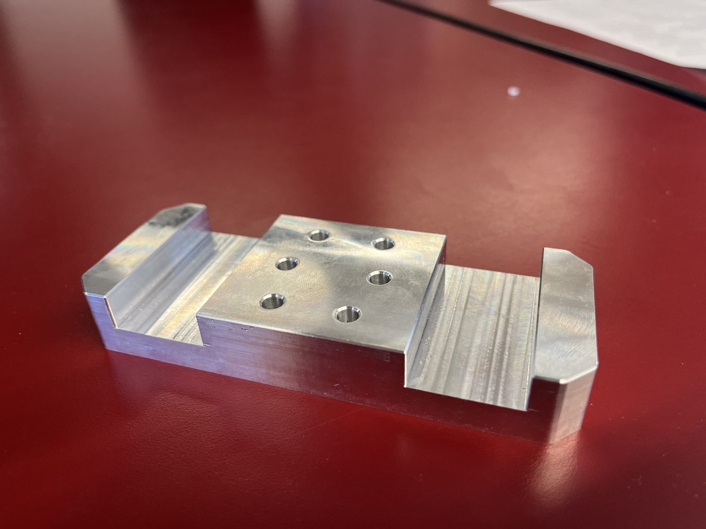
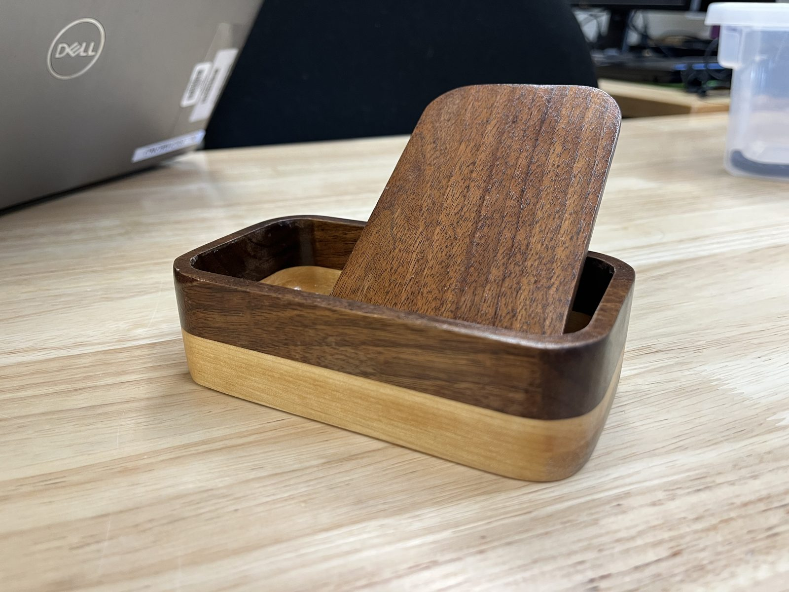

Engineering projects I've done in school and robotics.
Software: Fusion 360, AutoCAD, VS Code
In the shop: Tormach 1100MX mill, Tormach 24R router, Markforged and Bambu Lab 3D printers
Captain & Co-Software Lead
Piano, Level 10 California State Honors
For each one I go through the design, the Fusion model, how I machined it, and what I took away from it.
Designed in Fusion 360 and cut on the CNC mill.
About →
A precision machined metal part from this semester.
About →
A walnut and maple box with a press-fit lid, cut on the Tormach 24R router.
About →Additional project from semester 1.
About →Engineering I do outside of class.
I programmed our competition robot in Java using WPILib and CTRE libraries, and I co-led a robot that advanced to the 2026 NorCal State Championship. I also developed and deployed a YOLOv8 computer vision model for real-time object detection on the robot. As Drive Coach, I direct match strategy and coordinate with alliance teams. Our team earned the Industrial Design Award (2026) and the Innovation in Control Award (2025).
I developed an algorithm that combines satellite imagery, topography map layers, and city data to find the storm drains that are most likely to clog.
One or two sentences about what you do as a volunteer.